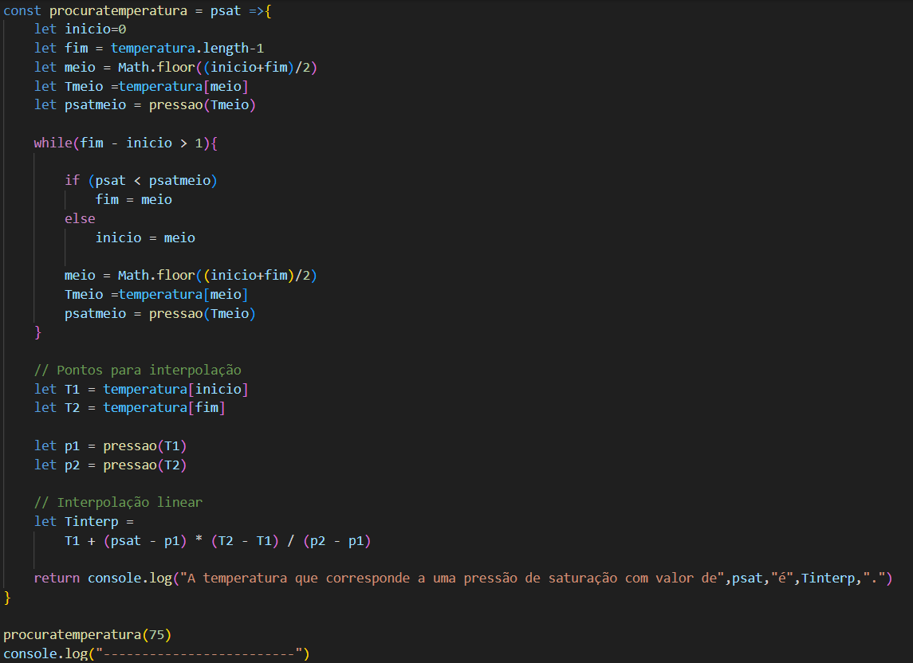
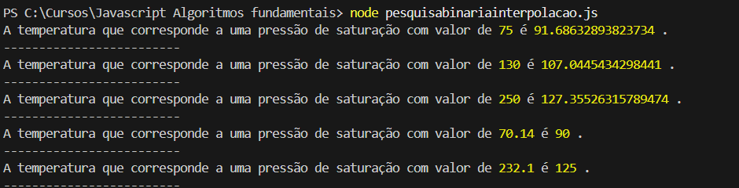

Na postagem Algoritmo da Pesquisa Binária Aplicado à Procura em Tabelas Termodinâmicas em JavaScript, foi apresentado o algoritmo da pesquisa binária. Posteriormente, foi apresentada uma versão modificada desse algoritmo fundamental em ciência da computação para resolver o problema parcial de busca de um valor de temperatura em uma estrutura de dados com pares de temperatura da água e pressão de saturação, tendo como entrada a pressão de saturação.
Agora nessa postagem, iremos modificar o algoritmo novamente para que possibilite a busca da temperatura correspondente a uma pressão de saturação segundo uma aplicação real : quando é necessário fazer a interpolação na estrutura de dados. Dificilmente, quando buscamos um valor em uma tabela termodinâmica, o dado irá corresponder ao valor exato da lista de dados. Quase sempre temos que interpolar o valor de entrada na série de dados. Dessa forma, precisamos incluir os comando que possibilitem a interpolação no mecanismo de busca.
A estrutura de dados usada para desenvolvimento do algoritmo modificado é a mesma usada e já explicada em detalhes na postagem Algoritmo da Pesquisa Binária Aplicado à Procura em Tabelas Termodinâmicas em JavaScript. É um objeto do tipo Map.
Na Figura 1 apresentamos o algoritmo. O início é o mesmo do artigo citado, inicializando os ponteiros início, fim e meio. Depois as variáveis Tmeio e psatmeio são inicializadas. No laço while, não temos mais a condição psatmeio !== psat, pois o valor de pressão de saturação não é um valor exato na série de dados. Temos apenas a condição fim - inicio > 1, pois não estamos mais procurando um valor exato, mas agora o laço deverá parar quando o intervalo estiver reduzido a dois pontos vizinhos. Nesse momento devemos fazer a interpolação.
Outra modificação necessária é que, quando analisamos a condição if (psat < psatmeio), em caso positivo, não podemos executar mais fim = meio - 1, pois iríamos excluir ponto médio do intervalo. Devemos fazer fim = meio para deixar o ponto médio no intervalo, pois ele pode virar um dos extremos do intervalo vizinho à resposta. Se a condição do if é falsa, executamos inicio = meio. Depois de renovar os três ponteiros, as funções Tmeio e psatmeio são recalculadas.
O laço while é repetido até que fim - inicio = 1. Quando essa condição é alcançada, é feito o cálculo da temperatura interpolada. Nesse momento é definido em qual intervalo de temperaturas T1 = temperatura[inicio] e T2 = temperatura[fim] se encontra o valor procurado. Com esses valores de temperatura, buscamos na estrutura de dados Map as pressões p1 = pressao(T1) e p2 = pressao(T2). Depois de determinados esses valores, é calculada a Tinterp pela fórmula ao fim do algoritmo apresentado na Figura 1.

Na Figura 2 é apresentada a saída do algoritmo de pesquisa binária com interpolação. Podemos ver que o método agora funciona tanto para temperaturas exatas (valores de pressão de saturação exatos na estrutura de dados) quanto para temperaturas interpoladas (valores de pressão de saturação entre dois valores exatos da série de dados).

Desenvolvimento : Química Programada